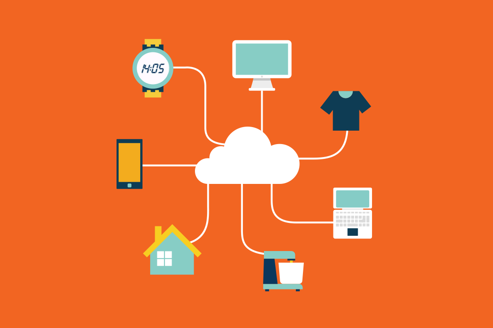

les objets connectes
création et distribution de logiciels libres multi-auteurs

Objet connecté
Un objet connecté est un objet physique équipé de capteurs ou d’une puce qui lui permettent de transcender son usage initial pour proposer de nouveaux services. Il s’agit d’un matériel électronique capable de communiquer avec un ordinateur, un smartphone ou une tablette via un réseau sans fil (Wi-Fi, Bluetooth, réseaux de téléphonie mobile, réseau radio à longue portée de type Sigfox ou LoRa, etc.), qui le relie à Internet ou à un réseau local.
pour manipuler des objets connéctés, nous disposons
de plusieurs outils comme des applications mobiles ou des logiciels pour certains objets.
Groupe d'objets connectés
On distingue communément deux grands groupes d’objets connectés :
-les objets destinés à la collecte et l’analyse de données, dont la mission principale est de collecter et transmettre des informations ;
-les objets qui répondent à une logique de contrôle-commande et permettent de déclencher une action à distance.
menu principal